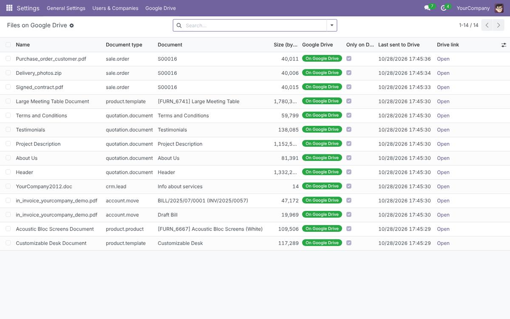
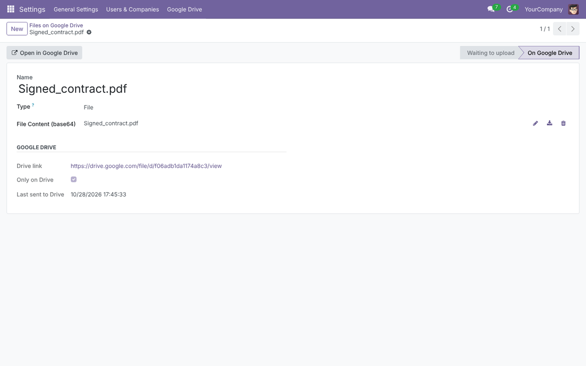
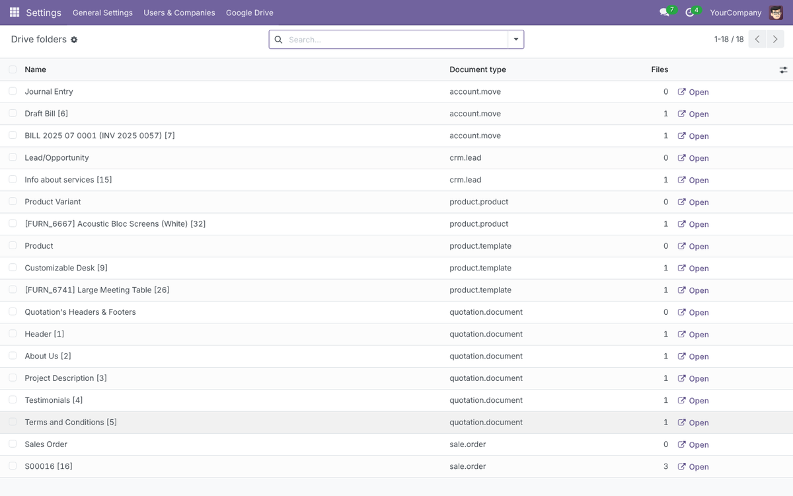
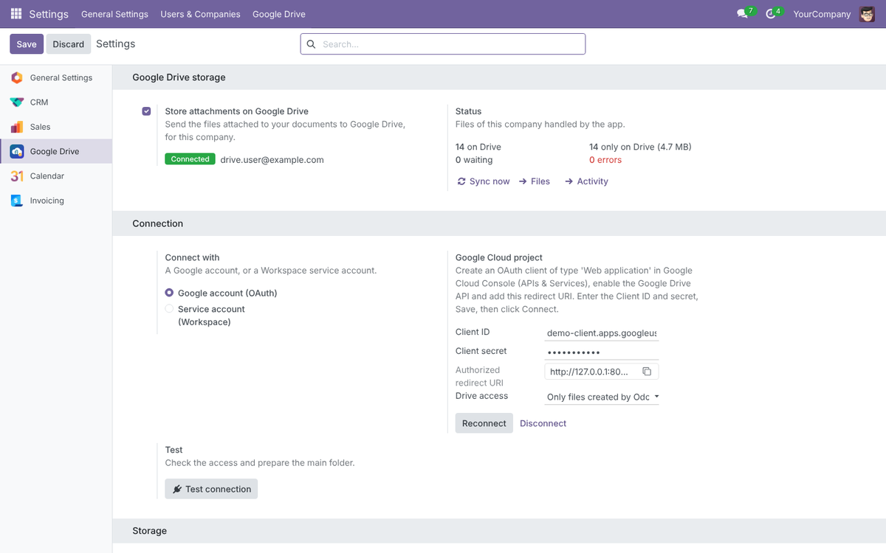
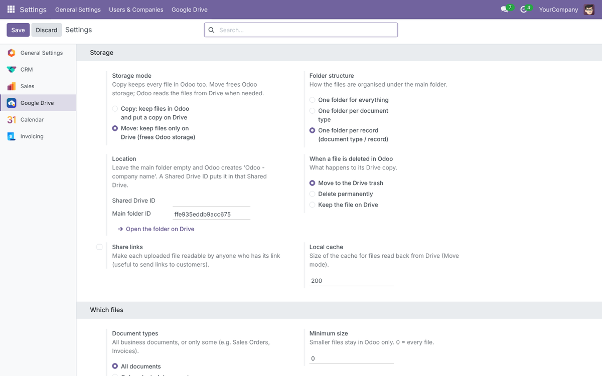
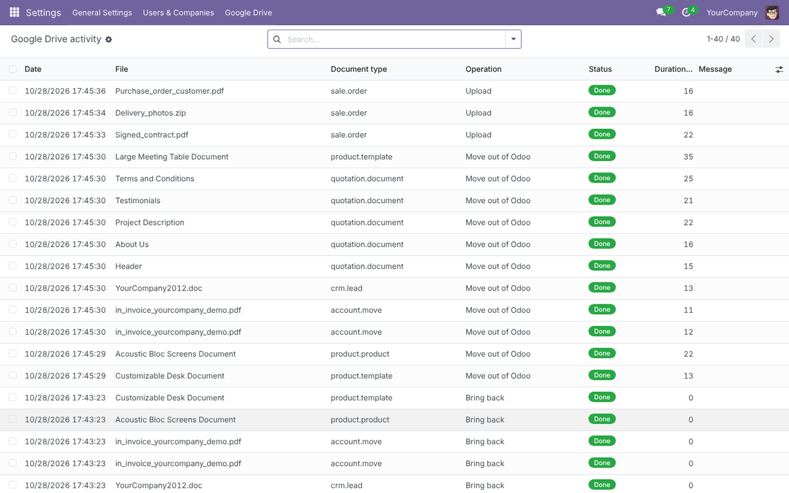

Every file attached to an Odoo document is sent to Google Drive automatically, in tidy folders. Keep a copy in Odoo, or move the files out of Odoo to free its storage – people keep working exactly as before.
Odoo 18 Folders per document type or per record Update, rename & delete sync Shared Drives & service accounts



Google Workspace? Use a service account with a Shared Drive instead of a personal account. By default the app only asks Google for access to the files it creates.



Which files are sent?
Files attached to records (chatter, e-mails, reports saved as attachments, imports). Odoo's technical files (views, assets) never are; product images and other images stored in fields only when you switch that on.
Do users need a Google account?
No. Users keep opening files in Odoo. The Drive link opens the file on Drive for people who have access to it, or for everyone when "Anyone with the link" is on.
What if Google is unreachable?
Uploads are retried automatically. In Move mode, recently read files come from the local cache.
Dependencies?
None besides Odoo itself: no Google library to install.
Developed and supported by Nextbridge · www.nextbridge.pk · samiullah.3277@nxb.com.pk
Google Drive is a trademark of Google LLC. This app is not affiliated with or endorsed by Google.